승강기산업기사 (2016-03-06 기출문제)
1과목: 승강기개론
1. 엘리베이터의 안전장치가 아닌 것은?
- 조속기
- 완충기
- 브레이크
- 균형체인
(정답률: 90%)

2. 비상용엘리베이터에서 정전 시 예비전원에 의하여 엘리베이터를 몇 시간이상 가동할 수 있어야 하는가?
- 0.5
- 1
- 1.5
- 2
(정답률: 88%)
3. 기계실 크기는 설비, 특히 전기설비의 작업이 쉽고 안전하도록 하기 위하여 작업구역에서 유효 높이는 몇 m 이상이어야 하는가?(관련 규정 개정전 문제로 여기서는 기존 정답인 2번을 누르면 정답 처리됩니다. 자세한 내용은 해설을 참고하세요.)
- 1.8
- 2
- 2.2
- 2.4
(정답률: 89%)
4. VVVF 제어방식에서 인버터 제어방식을 일반적으로 어떻게 표현하는가?
- PAM
- PWM
- PSM
- PTM
(정답률: 85%)
5. 문짝수는 2 이고 문은 측면 개폐방식일 경우 기호로 나타낸 것은?
- 1S
- 2S
- 1CO
- 2CO
(정답률: 91%)
6. 로프와의 면압이 작아 로프의 수명은 길어지지만 마찰력이 가장 작아 와이어로프의 권부각을 크게 할 수 있어 더블랩 방식의 권상기에 많이 사용되고 있는 도르래 홈의 형상은?
- V홈
- U홈
- T홈
- 언더커트홈
(정답률: 84%)
7. 전기식 엘리베이터 승강로 구조에서 작업자가 피트 바닥으로 안전하게 내려가기 위해 사용위치에 고정시킨 사다리의 높이는 승강장문 문턱 위로 몇 m 이상으로 연장되어야 하는가?
- 1
- 1.1
- 1.2
- 1.3
(정답률: 69%)
8. 기어드형 권상기에서 엘리베이터의 속도를 결정하는 요소가 아닌 것은?
- 시브의 직경
- 로프의 직경
- 기어의 감속비
- 전동기의 회전수
(정답률: 90%)
9. 파킹스위치의 설치장소에 부적합한 곳은?
- 승강장
- 경비실
- 기계실
- 중앙관리실
(정답률: 71%)
10. 무빙워크의 경사도는 몇 도 이하인가?
- 8
- 10
- 12
- 15
(정답률: 90%)
11. 에너지 분산형 완충기(유입식)의 행정거리에 관한 설명 중 옳은 것은?
- 정격속도의 115%로 충돌할 때 평균감속도 0.1gn이하로 정지하기에 충분한 행정
- 정격속도의 140%로 충돌할 때 평균감속도 0.1gn이하로 정지하기에 충분한 행정
- 정격속도의 115%로 충돌할 때 평균감속도 1.0gn이하로 정지하기에 충분한 행정
- 정격속도의 140%로 충돌할 때 평균감속도 1.0gn이하로 정지하기에 충분한 행정
(정답률: 84%)
12. 승강기 완성검사 시 카 비상정지장치가 작동될 때, 부하가 없거나 부하가 균일하게 분포된 카의 바닥은 정상적인 위치에서 몇 % 를 초과하여 기울어지지 않아야 하는가?
- 1
- 3
- 5
- 10
(정답률: 88%)
13. 엘리베이터용 전동기의 용량을 결정하는 주된 요인이 아닌 것은?
- 행정거리
- 정격하중
- 정격속도
- 종합효율
(정답률: 85%)
14. 로프의 꼬임방법으로 승객용 엘리베이터에서 일반적으로 가장 많이 사용하는 방법은?
- 랭그 S꼬임
- 랭그 Z꼬임
- 보통 S꼬임
- 보통 Z꼬임
(정답률: 85%)
15. 엘리베이터의 설비 계획으로 적당하지 않은 것은?
- 엘리베이터의 배치에 대해서는 사전에 충분한 검토가 필요하다.
- 엘리베이터 이용자의 대기시간은 허용치를 초과하더라고 상관없다.
- 교통량 계산의 결과 그 빌딩의 교통 수요에 적합한 대수이어야 한다.
- 다수의 엘리베이터를 설치할 경우에는 가급적 건물의 중앙에 집결시키는 것이 바람직하다.
(정답률: 86%)
16. 다음 설명 중 틀린 것은?
- 엘리베이터는 수직 교통수단이다.
- 에스컬레이터란 오티스회사의 등록상표이었다.
- 팬터그래프식은 유압식 엘리베이터로 볼 수 없다.
- 아르키메데스의 드럼식 권상기계사 최초라 할 수 있다.
(정답률: 91%)
17. 그림과 같은 유압회로의 설명이 아닌 것은?
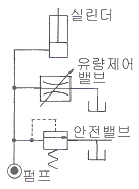
- 효율이 높다.
- 정확한 속도제어가 가능하다.
- 블리드 오프(BLEED OFF)회로이다.
- 유량제어밸브를 주회로에서 분기된 바이패스회로에 삽입한 회로이다.
(정답률: 78%)
18. 유압엘리베이터의 유압은 일반적인 경우 몇 kg/cm2 정도인가?
- 10~60
- 30~90
- 40~100
- 60~120
(정답률: 69%)
19. 승강로 피트 바닥 밑에 사무실, 통로 또는 기타 시설이 설치되어 사람이 들어가는 구조일 때 엘리베이터에는 어떠한 안전장치를 추가로 설치해야 하는가?
- 로프 브레이크
- 균형추용 완충기
- 균형추 비상정지장치
- 상승방향 과속방지장치
(정답률: 89%)
20. 와이어 로프의 구성요소가 아닌 것은?
- 소선
- 킹크
- 심강
- 스트랜드
(정답률: 84%)
2과목: 승강기설계
21. 엘리베이터용 와이어로프에 관한 설명으로 틀린 것은?
- G종: 습도가 높은 환경에서 사용된다.
- E종: 엘리베이터에 주로 사용되는 것이다.
- A종: 파단강도가 높아 초고층용으로 사용된다.
- B종: 강도, 경도가 높아서 중하중용 엘리베이터에 사용된다.
(정답률: 67%)
22. 엘리베이터 도어머신에 요구되는 특성 중 옳은 것은?
- 원활한 작동을 위해서는 소음이 있어도 좋다.
- 감속기로는 헬리컬 감속기가 주류를 이루고 있다.
- 우수한 성능을 내기 위해서는 중량감이 있어야 한다.
- 구출 작업 시 닫혀 진 상태에서 정전 시 손으로 열 수 있어야 한다.
(정답률: 86%)
23. 수직 개폐식 문의 현수 로프의 안전율로 옳은 것은?
- 6 이상
- 8 이상
- 10 이상
- 12 이상
(정답률: 59%)
24. 비상용 엘리베이터의 기본요건에 대한 설명으로 틀린 것은?
- 출입구 유효 폭은 900mm 이상이어야 한다.
- 비상용엘리베이터는 건축물의 전 층을 운행하여야 한다.
- 피난용도로 의도된 경우, 정격하중은 1000kg 이상이어야 한다.
- 소방관이 조작하여 엘리베이터 문이 닫힌 이후부터 60초 이내에 가장 먼 층에 도착하여야 된다.
(정답률: 71%)
25. 전동기에 인가되는 전압과 주파수를 동시에 변환시켜 직류전동기와 동등한 제어성능을 얻을 수 있도록 제어하는 방법은?
- VVVF
- 교류 귀환제어
- 교류 1단 속도제어
- 교류 2단 속도제어
(정답률: 90%)
26. 전동기의 역률에 관한 설명으로 틀린 것은?
- 전동기의 역률은 대용량일수록 또 극수가 클수록 좋아진다.
- 전동기는 권선에 의한 지상전류로 인하여 역률도 지체역률이다.
- 역률은 교류에 있어서의 전압과 전류의 파장, 격차의 정도를 백분율로 표시한다.
- 역률을 개선하기 위하여 위상 보상을 위한 콘덴서를 전동기와 병렬 접속하여 사용한다.
(정답률: 69%)
27. 비상용 엘리베이터 운행속도의 기준으로 옳은 것은?
- 0.5m/s 이상
- 0.75m/s 이상
- 1m/s 이상
- 1.5m/s 이상
(정답률: 86%)
28. 엘리베이터의 교통량을 계산하는 자료가 아닌 것은?
- 층고
- 층별 용도
- 빌딩의 용도
- 승객의 연령
(정답률: 94%)
29. 모듈이 4인 스퍼 외접기어의 잇수가 각각 30, 60이라고 할 때 양축 간의 중심거리는?
- 90
- 180
- 270
- 360
(정답률: 76%)
30. 6층 이상의 거실 면적의 합계가 7200m2인 숙박 시설인 경우 승객용 엘리베이터를 몇 대 설치해야 하는가?
- 1대
- 2대
- 3대
- 4대
(정답률: 82%)
31. 그림은 승강기 전동기 속도제어 회로의 일부이다. 회로의 올바른 설명은?
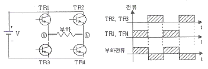
- 교류를 직류로 바꾸어 주는 컨버터(정류기) 역할을 한다.
- 트랜지스터 대신에 SCR을 사용한다면 오른쪽 파형을 얻을 수 없다.
- TR1과 TR4가 도통하면 부하에 ⓑ에서 ⓐ방향으로 전류가 흐른다.
- 트랜지스터 베이스 전류의 시간과 폭을 조절하면 PWM(pulse width modulation)제어가 가능하다.
(정답률: 62%)
32. 비상용 엘리베이터의 전기배선공사의 설명으로 틀린 것은?
- 기계실내 및 승강로 내의 배선은 일반배선으로 한다.
- 덕트, 전선관 등 침수할 우려가 있는 것은 물이 고이지 않는 구조로 한다.
- 방적구조로 기기에 이르는 전선은 가급적 도중에 접속점을 만들어 접속한다.
- 중앙관리실에 이르는 전선을 승강로에서 분기시킬 경우 분기단자는 최하층 바닥면에서 300mm이상 높이에 설치한다.
(정답률: 65%)
33. 3상 440V의 주전원으로 15kW의 권상전동기를 구동시킬 때 최대 가속전류는 약 몇 A 인가? (단, 전동기역률은 0.7, 승강기종합효율은 0.65, 최대 전류는 정격전류의 5.5배로 계산한다.)
- 155
- 214
- 238
- 246
(정답률: 47%)
34. 승강로 내부의 작업구역으로 승강로 벽을 통해 접근하기 위한 문에 대한 설명으로 틀린 것은?
- 승강로 내부 방향으로 열려야 한다.
- 폭은 0.6m 이상, 높이는 1.8m 이상이어야한다.
- 닫힌 상태를 확인하는 전기안전장치가 있어야 한다.
- 열쇠로 조작되는 잠금장치가 있어야 하며, 열쇠 없이 다시 닫히고 잠길 수 있어야 한다.
(정답률: 62%)
35. 다음의 엘리베이터 설비규정에 관한 설명 중 틀린 것은?
- 높이 31m를 초과하는 건축물에는 비상용 승강기를 추가로 설치하여야 한다.
- 초고층 건축물이라 함은 40층 이상 또는 건물 높이가 200m 이상인 건축물을 말한다.
- 층수가 6층 이상으로서 연면적이 2000m2 이상인 건축물에는 승강기를 설치하여야한다.
- 7층 이상인 공동주택에는 이삿짐 등을 운반할 수 있는 법적기준에 적합한 화물용 승강기를 설치하여야 한다.
(정답률: 69%)
36. 엘리베이터 감시반의 기능으로 틀린 것은?
- 제어기능
- 경보기능
- 표시기능
- 승객감시기능
(정답률: 83%)
37. 그림은 3상 유도전동기의 기동제어 회로이다. 기동 및 운전시 MC1과 MC2의 설명 중 옳은 것은?
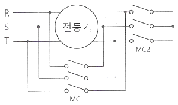
- 기동시 : MC1열림, MC2열림
- 기동시 : MC1닫힘, MC2열림
- 운전시 : MC1열림, MC2열림
- 운전시 : MC1닫힘, MC2열림
(정답률: 62%)
38. 전동기의 관성효과를 올바르게 나타내는 것은?
- GD
- GD2
- GD3
- GD4
(정답률: 78%)
39. 권상기와 관련된 설명 중 틀린 것은?
- 헬리컬 기어식이 웜 기어식보다 효율이 더 높다.
- 권상 도르래의 지름은 주로프 지름의 40배 이상을 적용한다.
- 권동식은 균형추를 사용하지 않기 때문에 로프식보다 권상동력이 크다.
- 권상 도르래에 로프가 감기는 각도가 클수록 승강기가 미끄러지기 쉽다.
(정답률: 84%)
40. 장애인용 승강기의 모든 스위치는?
- 바닥으로부터 0.8m 이상, 1.2m 이하의 높이에 설치
- 바닥으로부터 0.6m 이상, 1.1m 이하의 높이에 설치
- 바닥으로부터 0.5m 이상, 1m 이하의 높이에 설치
- 바닥으로부터 1m 이상, 1.3m 이하의 높이에 설치
(정답률: 86%)
3과목: 일반기계공학
41. 길이가 l인 단순보의 중앙에 집중하중 P가 작용할 때 최대 처짐은 중아에서 발생한다. 이때 처짐량 (δmax)을 산출하는 식으로 옳은 것은? (단, E는 세로탄성계수, I는 단면 2차 모멘트이다.)
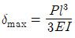
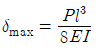
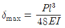
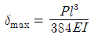
(정답률: 67%)
42. 공작물을 회전시키고, 공구는 직선운동으로 공작물을 가공하는 공작기계는?
- 드릴
- 밀링
- 연삭
- 선반
(정답률: 71%)
43. 길이 300mm인 구리봉 양단을 고정하고 20℃에서 70℃로 가열하였을 때 열응력에 의해 발생되는 압축응력[N/mm2]은? (단, 구리봉의 세로탄성계수는 9.2×103N/×mm2, 선팽창계수(α)는 1.6×10-5/℃이다.)
- 6.28
- 7.36
- 8.39
- 10.2
(정답률: 64%)
44. 탄소강에 관한 설명으로 옳지 않은 것은?
- 탄소량이 증가하면 비중도 증가한다.
- 탄소강의 탄성율은 온도가 증가함에 따라 감소한다.
- 탄소강은 200~300℃에서 청열 취성(메짐)이 발생한다.
- 아공석강 영역에서 탄소량이 증가하면 경도는 증가하나, 연신율은 감소한다.
(정답률: 51%)
45. 유압기는 작은 힘으로 큰 힘을 얻는 장치인데, 이것은 무슨 이론을 이용한 것인가?
- 보일의 법칙
- 베르누이 정리
- 파스칼의 원리
- 아르키메데스의 원리
(정답률: 74%)
46. 그럼의 지름이 400mm인 브레이크 드럼에 브레이크 블록을 누르는 힘 280N이 작용하고 있을 때 브레이크의 제동력은 몇 N 인가?(단, 마찰계수는 0.15 이다.)
- 42
- 60
- 8400
- 16800
(정답률: 43%)
47. 아공석강에서는 Ac3점에서 40~60℃ 높은 범위에서 가열하여 노내에서 서냉시키는 방법으로 주로 가공 경화된 재료를 연화시키거나 내부응력 제거 및 불순물의 방출 등을 할 수 있는 열처리 방법은?
- 불림(narmalizing)
- 뜨임(tempering)
- 담금질(quenching)
- 풀림(annealing)
(정답률: 65%)
48. 유압펌프의 종류 중 회전식이 아닌 것은?
- 피스톤 펌프
- 기어 펌프
- 베인 펌프
- 나사 펌프
(정답률: 76%)
49. 유압펌프에서 송출량이 10L/min 이고 0.5MPa로 압력이 작용할 경우 유압펌프의 동력은 약 W 인가?
- 45.06
- 66.67
- 83.33
- 102.42
(정답률: 55%)
50. 두랄루민은 알루미늄에 무엇을 첨가한 합금인가?
- 구리, 마그네슘, 주석
- 구리, 마그네슘, 망간
- 주석, 마그네슘, 철
- 주석, 마그네슘, 아연
(정답률: 82%)
51. 다음 중 언더컷에 대한 설명으로 옳은 것은?
- 과잉의 용융금속이 용착부 밖으로 덮인 비드의 상태를 말한다.
- 용접 중에 용착 금속 내에 녹아 들어간 슬래그가 용착 금속 내에 혼입되어 있는 결함을 말한다.
- 용착 금속 내에 포함되어 있는 가스나 응고할 때 생긴 일산화탄소 또는 슬래그 등의 수분에서 생긴 수소 등의 가스가 밖으로 방출되지 못하여 생긴 작은 공간을 말한다.
- 용접전류가 과다할 경우 용융이 지나치게 되어 비드 가장자리에 홈 또는 오목한 형상이 생기는 것을 말한다.
(정답률: 83%)
52. 2개의 축이 같은 평면 내에 있으면서 그 중심선이 30° 이내의 각도로 교차하는 경우의 축 이음으로 가장 적합한 것은?
- 고정 커플링(fixed coupling)
- 올덤 커플링(Oldham's coupling)
- 플렉시블 커플링(flexible coupling)
- 유니버설 커플링(universal coupling)
(정답률: 62%)
53. 축에 작용하는 비틀림모멘트를 T, 전단탄성계수를 G, 극관성모멘트를 Ip, 길이를 l이라 할 때, 전체 비틀림각은?
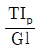
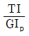
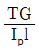
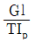
(정답률: 65%)
54. 안전율을 나타내는 식으로 옳은 것은?
- 인장강도/허용응력
- 사용응력/허용응력
- 허용응력/인장강도
- 허용응력/사용응력
(정답률: 70%)
55. 양단에 베어링으로 지지되어 있으며 그 중앙에 회전체 1개를 가진 원형 단면 축에 대한 위험속도의 계산이 필요한 설계인자로서 가장 거리가 먼 것은?
- 축의 길이
- 전단탄성계수
- 회전체의 무게
- 축의 단면 2차 모멘트
(정답률: 53%)
56. 성크 키의 길이가 200mm, 키의 측면에 발생하는 전단력이 80kN 이고, 키 폭은 높이의 1.5배라고 하면 키의 허용전단응력이 20MPa일 경우 키 높이는 약 몇 mm이상으로 하면 되는가?
- 13.33
- 18.⑤
- 25.42
- 30.06
(정답률: 38%)
57. 매분 200회전하는 지름 300mm의 평 마찰차를 400N으로 밀어붙이면 약 몇 kW의 동력을 전달시킬 수 있는가? (단, 접촉부 마찰계수는 0.3이다.)
- 0.268
- 0.377
- 268
- 377
(정답률: 49%)
58. 다음 중 축과 보스의 양쪽에 키 홈을 파며 가장 널리 사용되는 일반적인 키는 무엇인가?
- 안장 키
- 납작 키
- 둥근 키
- 묻힘 키
(정답률: 64%)
59. 다이 또는 롤러를 사용하여 재료를 회전시키면서 압력을 가하여 제품을 만드는 가공방법으로 나사의 가공에 적합한 것은?
- 압연가공(rolling)
- 압출가공(extruding)
- 전조가공(form rolling)
- 프레스가공(press working)
(정답률: 56%)
60. 측정은 방법에 따라 직접측정, 비교측정, 간접측정, 절대측정으로 구분할 수 있는데, 다음 중 비교측정법으로 측정하는 것은?
- 마이크로미터
- 다이얼 게이지
- 사인바
- 터보 게이지
(정답률: 71%)
4과목: 전기제어공학
61. PLC 제어의 특징으로 틀린 것은?
- 소형화가 가능하다.
- 유지보수가 용이하다.
- 제어시스템의 확장이 용이하다.
- 부품간의 배선에 의해 로직이 결정된다.
(정답률: 63%)
62. 3300/200V, 10kVA인 단상변압기의 2차를 단락하여 1차측에 300V를 가하니 2차에 120A가 흘렀다. 1차 정격전류(A) 및 이 변압기의 임피던스 전압(V)은 약 얼마인가?
- 1.5A, 200V
- 2.0A, 150V
- 2.5A, 330V
- 3.0A, 125V
(정답률: 34%)
63. 전기로의 온도를 1000℃로 일정하게 유시키기 위하여 열전온도계의 지시값을 보면서 전압조정기로 전기로에 대한 인가전압을 조절하는 장치가 있다. 이 경우 열전온도계는 다음 중 어느 것에 해당 되는가?
- 조작부
- 검출부
- 제어량
- 조작량
(정답률: 60%)
64. T1 > T2 > 0 일 때,
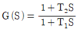
의 벡터궤적은?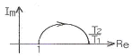
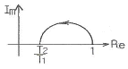
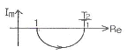
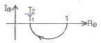
(정답률: 71%)
65. 목표값이 시간적으로 임의로 변하는 경우의 제어로서 서보기구가 속하는 것은?
- 정치 제어
- 추종 제어
- 마이컴 제어
- 프로그램 제어
(정답률: 56%)
66. 기준권선과 제어권선의 두 고정자권선이 있으며, 90도 위상차가 있는 2상 전압을 인가하여 회전자계를 만들어서 회전자를 회전시키는 전동기는?
- 동기전동기
- 직류전동기
- 스탭전동기
- AC 서보전동기
(정답률: 62%)
67. Im sin(ωt+θ)의 전류와 Em cos(ωt-Φ)인 전압사이의 위상차는?
- θ-Φ
- θ+Φ
- π/2 - (θ+Φ)
- π/2 + (Φ+θ)
(정답률: 61%)
68. 다음 특성 방정식 중 계가 안정될 필요조건을 갖춘 것은?
- s3+9s2+17s+14=0
- s3-8s2+13s-12=0
- s4+3s2+12s+8=0
- s3+2s2+4s-1=0
(정답률: 55%)
69. 220V, 1kW의 전열기에서 전열선의 길이를 2배로 늘리면 소비전력은 늘리기 전의 전력에 비해 몇 배로 변화하는가?
- 0.25
- 0.5
- 1.25
- 1.5
(정답률: 73%)
70. 교류전류의 흐름을 방해하는 소자는 저항이외에도 유도코일, 콘덴서 등이 있다. 유도코일과 콘덴서 등에 대한 교류전류의 흐름을 방해하는 저항력을 갖는 것을 무엇이라고 하는가?
- 리액턴스
- 임피던스
- 컨덕턴스
- 어드미턴스
(정답률: 60%)
71. 그림과 같이 콘텐서 3F와 2F가 직렬로 접속된 회로에 전압 20V를 가하였을 때 3F 콘텐서 단자의 전압 V1은 몇 V 인가?
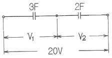
- 5
- 6
- 7
- 8
(정답률: 58%)
72. 그림과 같은 브리지정류기는 어느 점에 교류입력을 연결해야 하는가?
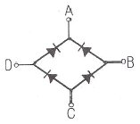
- B - D점
- B - C점
- A - C점
- A - B점
(정답률: 69%)
73. 지시 전기계기의 정확성에 의한 분류가 아닌 것은?
- 0.2급
- 0.5급
- 2.5급
- 5급
(정답률: 67%)
74. 그림과 같은 파형의 평균값은 얼마인가?
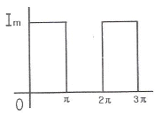
- 2Im
- Im
- Im/2
- Im/4
(정답률: 67%)
75. 자체 판단능력이 없는 제어계는?
- 서보기구
- 추치 제어계
- 개화로 제어계
- 폐회로 제어계
(정답률: 58%)
76. 피드백 제어계에서 반드시 있어야 할 장치는?
- 전동기 시한 제어장치
- 발전기서의 동작 장치
- 응답속도르 느리게 하는 장치
- 목표값과 출력을 비교하는 장치
(정답률: 85%)
77. 제어기기에서 서보전동기는 어디에 속하는가?
- 검출기기
- 조작기기
- 변환기기
- 증폭기기
(정답률: 72%)
78. R, L, C 직렬회로에서 인가전압을 입력으로, 흐르는 전류를 출력으로 할 때 전담함수를 구하면?
- R+LS+CS
- 1/R+LS+CS
- E+LS+1/CS
- 1/R+LS+1/CS
(정답률: 49%)
79. 주상변압기의 고압축에 몇 개의 탭을 두는 이유는?
- 선로의 전압을 조정하기 위하여
- 선로의 역률을 정하기 위하여
- 선로의 잔류전하를 방전시키기 위하여
- 단자가 고장이 발생하였을 떄를 대비하기 위하여
(정답률: 57%)
80. 제어요소는 무엇으로 구성되어 있는가?
- 비교부
- 검출부
- 조절부와 조작부
- 비교부와 검출부
(정답률: 81%)